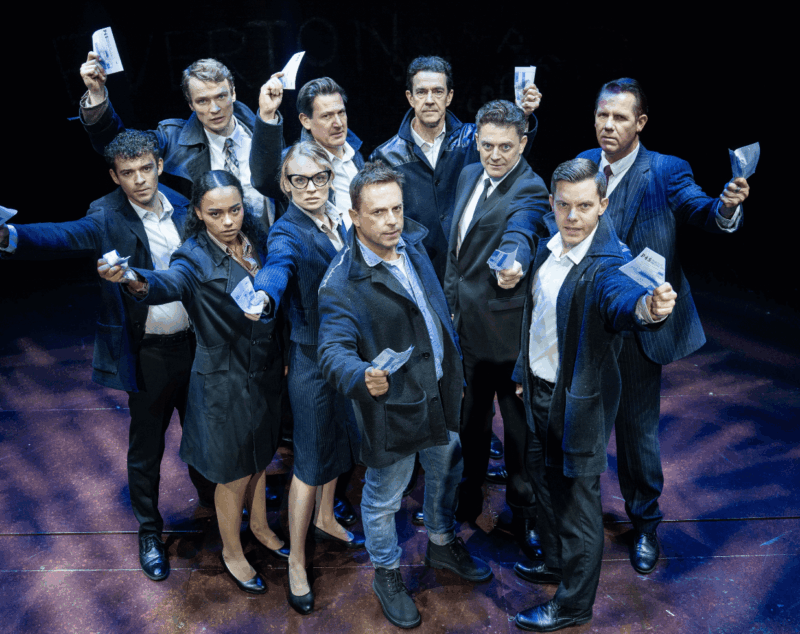
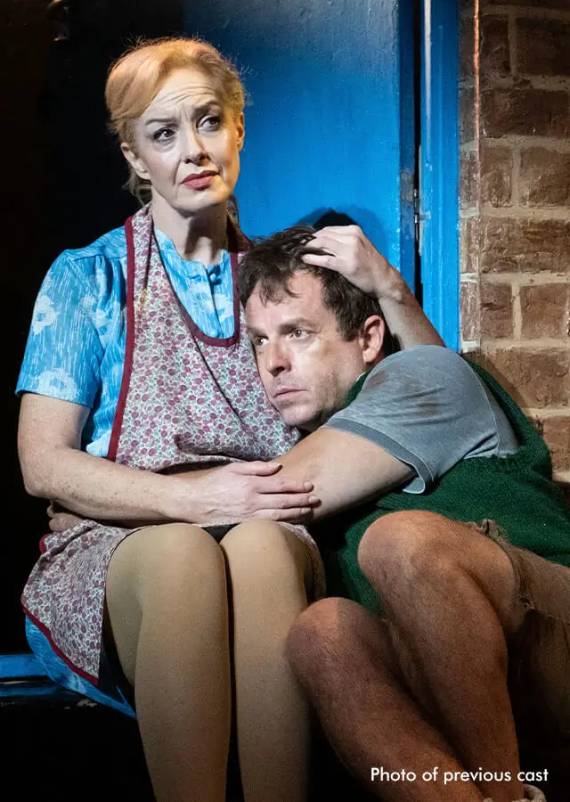

Patrick O'Toole as Mickey Johnstone
David Hogan as Edward Lyons
Cathryn O'Sullivan as Mrs. Johnstone
Sophie Greyson as Mrs. Lyons
Lucy Bollinger as Linda
Don Krieg as The Narrator
One twin brother is raised in a wealthy household, while the other is raised in poverty. Despite their different upbringings, the boys—Mickey and Eddie—become close friends, unaware of their true relationship.As they grow up, their worlds pull them in opposite directions: Mickey struggles with unemployment, hardship, and personal turmoil, while Eddie enjoys privilege and opportunity, all the while, heir shared love for the same woman, Linda, intensifies the tension between them.

